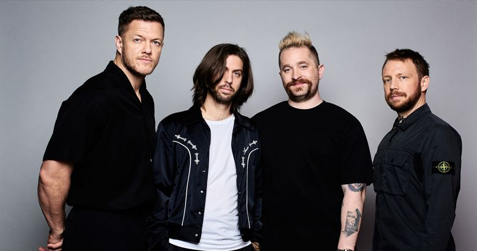
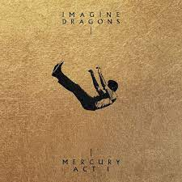

Imagine Dragons
Imagine Dragons es una banda estadounidense de pop rock originaria de Las Vegas, Nevada.
Está compuesta por Dan Reynolds, Wayne Sermon, Ben McKee y Daniel Platzman.
Mis albums favoritos de esta banda son:
Origins

Es el cuarto álbum de estudio de la banda de pop rock estadounidense Imagine Dragons, lanzado el 9 de noviembre
de 2018 a través de KIDinaKORNER e Interscope Records.
Mercury Act 1
Es el quinto álbum de la banda estadounidense de pop rock Imagine Dragons, lanzado el 3 de septiembre de 2021